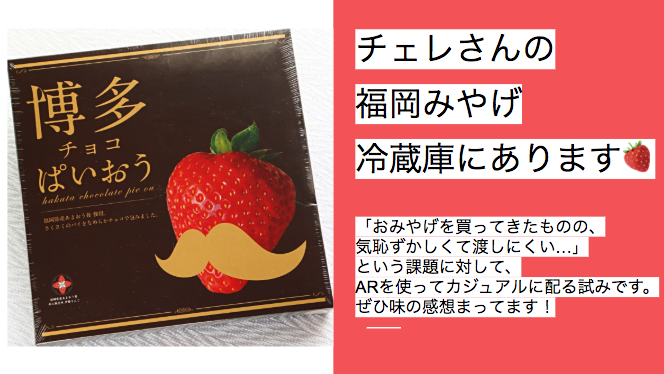

<!DOCTYPE html>
<html lang="ja">
<head>
  <meta charset="UTF-8">
  <meta name="viewport" content="width=device-width, initial-scale=1.0">
  <meta http-equiv="X-UA-Compatible" content="ie=edge">
  <title>AR</title>
  <!-- include A-Frame obviously -->
  <script src="https://aframe.io/releases/0.9.0/aframe.min.js"></script>
  <!-- include ar.js for A-Frame -->
  <script src="https://jeromeetienne.github.io/AR.js/aframe/build/aframe-ar.js"></script>
</head>
<body style='margin : 0px; overflow: hidden;'>

  <a-scene embedded arjs="debugUIEnabled:false;">
      <a-assets>
        <!-- <a-asset-item id="strawberry-obj" src="./assets/aframe/strawberry.obj"></a-asset-item>
        <a-asset-item id="strawberry-mtl" src="./assets/aframe/strawberry.mtl"></a-asset-item>
        <a-asset-item id="sushi-obj" src="./assets/aframe/sushi.obj"></a-asset-item>
        <a-asset-item id="sushi-mtl" src="./assets/aframe/sushi.mtl"></a-asset-item> -->
        <a-asset-item id="dragon-obj" src="./assets/aframe/dragon.obj"></a-asset-item>
        <a-asset-item id="dragon-mtl" src="./assets/aframe/dragon.mtl"></a-asset-item>
        <!--  -->
      </a-assets>

    <!-- <a-marker preset="hiro">
      <a-image src="#txt-hint" side="double" width="3" height="3"></a-image>
    </a-marker> -->

    <a-marker preset="hiro">
      <a-obj-model id="" src="#dragon-obj" mtl="#dragon-mtl" position="0 1.5 0" scale="1 1 1" rotation="0 0 0"
        animation="property: rotation; to:0 360 0; dur:8000; loop: true;"
      >
      </a-obj-model>
    </a-marker>

    <!-- <a-marker type="pattern" url="./assets/aframe/che-qr.patt">
      <a-image src="#txt-hint" side="double" width="2" height="2"></a-image>
    </a-marker> -->

    <!-- <a-marker type="pattern" url="./assets/aframe/i.patt">
      <a-obj-model id="" src="#strawberry-obj" mtl="#strawberry-mtl" position="0 0.2 0" scale="2 2 2" rotation="0 0 0"
        animation="property: rotation; to:0 360 0; dur:8000; loop: true;"
      >
      </a-obj-model>
    </a-marker> -->

    <!-- <a-marker type="pattern" url="./assets/aframe/chi.patt">
      <a-obj-model id="" src="#strawberry-obj" mtl="#strawberry-mtl" position="0 0.2 0" scale="2 2 2" rotation="0 0 0"
        animation="property: rotation; to:0 360 0; dur:8000; loop: true;"
      >
    </a-obj-model>
    </a-marker> -->

    <!-- <a-marker type="pattern" url="./assets/aframe/go.patt">
      <a-obj-model id="" src="#strawberry-obj" mtl="#strawberry-mtl" position="0 0.2 0" scale="2 2 2" rotation="0 0 0"
        animation="property: rotation; to:0 360 0; dur:8000; loop: true;"
      >
      </a-obj-model>
    </a-marker> -->

    <!-- <a-marker type="pattern" url="./assets/aframe/sushi.patt">
      <a-obj-model id="" src="#sushi-obj" mtl="#sushi-mtl" position="0 1.5 0" scale="3 3 3" rotation="0 0 0"
        animation="property: rotation; to:0 360 0; dur:8000; loop: true;"
      >
      </a-obj-model>
    </a-marker> -->


    <!-- <a-marker type="pattern" url="./assets/aframe/kakusin.patt">
      <a-obj-model id="" src="#sushi-obj" mtl="#sushi-mtl" position="0 3 0" scale="3 3 3" rotation="0 0 0"
        animation="property: rotation; to:0 360 0; dur:8000; loop: true;"
      >
      </a-obj-model>
    </a-marker> -->

   
    <!-- AR用のカメラを置く -->
    <a-entity camera></a-entity>

  </a-scene>
</body>
</html>